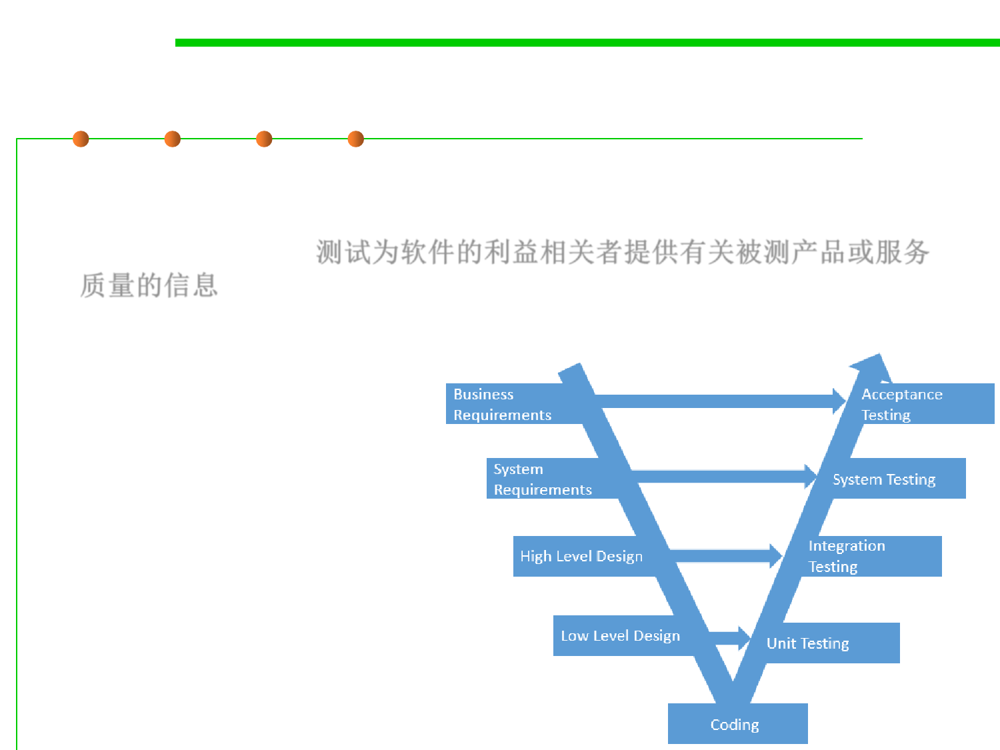

What is testing?
2.2 Process, Systems, and Tools of Software Construction
▪ Software testing is an investigation conducted to provide
stakeholders with information about the quality of the product or
service under test. 测试为软件的利益相关者提供有关被测产品或服务
质量的信息
▪ Software testing involves the execution of a software component or
system component to evaluate one or more properties of interest.
▪ Test techniques include the
process of executing a
program or application with
the intent of finding software bugs (errors or other defects), and
verifying that the software
product is fit for use.